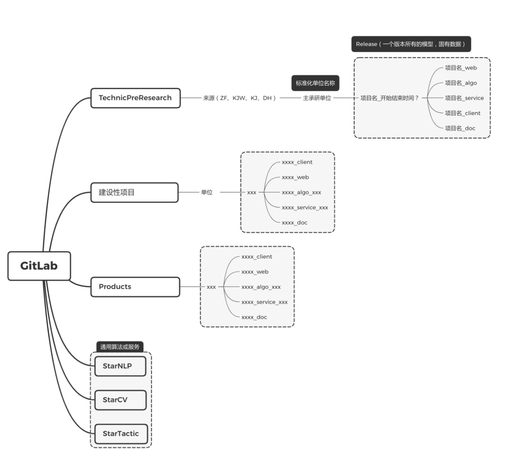

git 开发管理规范
1、创建 Git 仓库
1、创建 README.md
2、创建.gitignore 文件，最基本包含如下内容
.idea
log
.DS_Store
__pycache__
2、分支管理
环境
| 简称 | 备注 |
|---|---|
| dev | 开发和测试环境 |
| prod | 生产环境 |
分支划分 master 和 dev 不可直接提交，需要 pull request, code review 后 merge
| 分支 | 名称 | 环境 | 备注 |
|---|---|---|---|
| master | 主分支 | PROD | 用于正式版本部署，结合 git tag 使用 |
| dev | 测试分支 | DEV | 用于测试部署，实现持续集成，便于测试 |
| feature | 需求开发分支 | DEV | 用于功能开发，由项目管理人员指定创建 |
| bugfix | bug 修复分支 | DEV | 用于修复 dev 分支测试出的 bug |
| hotfix | 紧急修复分支 | PROD | 用于修复 master 分支使用过程中发现的 bug |

- 需求收集、论证和分解后，指定开发人员从 dev 分支根据需求创建 feature 分支；
- 开发人员在 feature 分支开发，本地开发测试完成后提交到分支；
- 先将 dev 与 feature 分支合并，并修复合并的 bug；
- 在 bug 修复后将 feature 分支提交 pull request 到 dev 分支，由主开发人员审查后合并；
- 测试人员在 dev 分支更新后，进行测试，并记录 bug；
- 相关人员新建 bug 分支，修复 bug，提交 pull request，由主开发人员审查后合并；
- 测试通过后由项目/技术负责人进行 code review，提交到 master 分支，使用 git tag 标记版本，并进行 release 发版，将相关模型和数据打包存储；
- 线上使用过程中，发现 bug，创建 hotfix 分支，修复后，由项目/技术负责人合并到 master 分支，并同步到 dev 分支。
3、GitLab 的 group 管理
- 分为几大基础 group：预研项目，建设性项目，产品，通用算法服务
- 基础 group 下面根据来源单元、承研单位等建 subgroup，subgroup 下面建项目的 subgroup
- 一个项目所有代码仓库都在一个 subgroup 里面
- 一个项目的代码仓库共用一个主的名称，根据前后端来进行后缀命名
- 一个项目必须有 doc 仓储，记录所有产品设计文档、设计图、技术设计文档、接口文档、测试文档，尽量使用 Markdown 格式。

commit 日志规范
建议参考规范：
e.g
fix(首页模块)：修复弹窗 JS Bug。
type 表示动作类型，可分为:
fix：修复 xxx Bug
feat：新增 xxx 功能
test：调试 xxx 功能
style：变更 xxx 代码格式或注释
docs：变更 xxx 文档
refactor：重构 xxx 功能或方法
scope 表示影响范围，可分为：模块、类库、方法等。
subject 表示简短描述，最好不要超过 60 个字，如果有相关 Bug 的编号，建议在描述中加上。